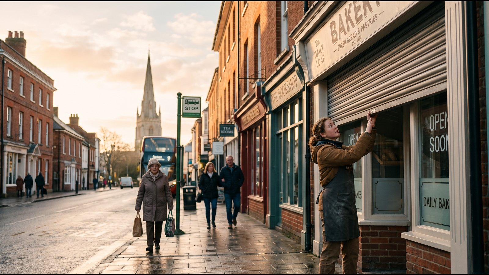
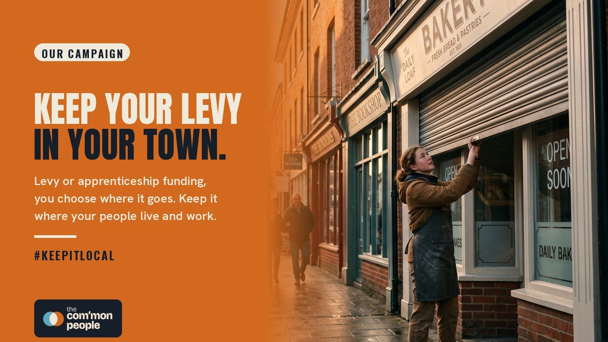

Keep your levy
in your town.
Levy or apprenticeship funding, you choose where it goes. What keeping it local actually means, why it works harder, and what your business gets back.


Where does your levy or apprenticeship funding go?
I spent nine years in recruitment before I joined Oaklands College. In that time I met a lot of leaders who spoke, with real pride, about "our community". Now I find myself asking those same leaders a different question. Where does your levy or apprenticeship funding actually go?
If you're a levy payer, your business pays it. If you're not, government funding still pays towards your apprentices' training, and you choose who delivers the accredited apprenticeship training and assessment for you. Either way, where that money goes is your choice. Your sites, your customers and your next generation of staff all live in real towns. Round here that means places like St Albans, Welwyn Garden City, and Borehamwood to name but a few. So why does so much of that money end up somewhere else outside of your postcode or even outside of the UK?
What keeping it local actually means
Before I make the case, let me explain what I mean, because "keep it local" can easily sound like a slogan.
When you take on an apprentice, someone has to deliver the training and the assessment, and you choose who that is. Keeping it local simply means choosing a training provider that is based where your sites and your people are. For most businesses in Hertfordshire, that means a further education college like Oaklands, a short drive or a bus ride from your door, rather than a provider run from the other end of the country or owned by investors overseas.
In practice, that changes three things. Your apprentice is taught by tutors they can meet face to face, on a campus they can get to, alongside other young people from the same area. You get a team you can pick up the phone to, who know the local employers, the local schools and the local skills gaps. And the money paying for that training goes to an organisation that puts it back into your area, instead of onto a balance sheet somewhere else.
It doesn't mean settling for less, and it doesn't mean only ever using one college. If you're a national business, colleges already club together to offer one national contract with local delivery. BAM, Mitie, Sodexo and Kier have all run national apprenticeship partnerships with a group of colleges working together (FE News and Tes).[23] And if your nearest college doesn't run the apprenticeship you need, there's usually another college in the region that does.
If you pay the levy, keeping it local can go one step further. You can transfer part of your funds to small businesses in your own supply chain or community, so their apprentices are funded too (GOV.UK, Transferring apprenticeship service funds).[18] Our team can talk you through how much and how.
So that's what I mean by local. What follows is my case for why it's the right choice for your business, and what you get back when you make it. Where it's my opinion, I say so. Where it's a fact, the source is named so you can check my working.
Follow the money
Let's start with the money, because it's bigger than most people realise. If your paybill is over £3 million, you pay the apprenticeship levy (FE Week, Budget 2025 coverage),[1] and across the country it soon adds up. The Office for Budget Responsibility expects the levy to raise £4.4 billion in 2025-26 (OBR forecast, reported by FE Week).[2]
Not all of that finds its way back into training. Between 2017-18 and 2023-24, almost £2.2 billion of England's apprenticeship budget was handed back to the Treasury (FE Week analysis of DfE budgets).[3] In my view, that's money paid in for skills that never did its job.
And since the start of the 2026/27 academic year, the clock has sped up. New levy funds now expire after 12 months instead of 24 (GOV.UK Apprenticeship Service, Budget 2025: Growth and Skills Levy).[4] In plain English, levy you don't plan for will now disappear twice as fast. Other funding rules are changing too, so it's worth talking to our team for the current detail before you plan.
Then there's the money that does get spent, and where it ends up. Independent training providers delivered 65% of apprenticeship starts between August 2025 and January 2026, while colleges delivered 19% (FE Week, from DfE data).[5] Look at who owns the biggest providers and the picture gets sharper. As of May 2023, eight of the ten largest providers by apprenticeship starts were majority-owned by private equity firms or other global investors (FE Week analysis by Jessica Hill).[6]
Who delivers the training
Share of apprenticeship starts, August 2025 to January 2026.
Let me be clear, because this matters to me: this isn't an attack on independent providers. Many of them do excellent work. My point is a simpler one. When a provider is owned by investors, any profit it makes belongs to those investors, wherever they happen to be. In my view, that's a choice your business is making, whether it means to or not.
Why local works harder
So what changes when you choose a local college instead? The first difference is who the money belongs to. Further education corporations like ours are exempt charities (Charities Act 2011, SI 2013/1764).[7] Oaklands College is run by Oaklands Further Education Corporation, and the members of that corporation are the trustees of the charity. Our published financial objective is to generate cash for reinvestment in the college (Oaklands College Report and Financial Statements, year ended 31 July 2024).[8] There are no shareholders waiting for a dividend. The money goes back into teaching, facilities and young people here in Hertfordshire.
That reinvestment reaches further than you might think. In 2023-24 we reached more than 18,000 school-age children through assemblies, careers fairs and guidance sessions (Oaklands College Annual Review 2023-24).[9] I'd argue many of those children are the future workforce of the businesses around us, and some of them could be yours.
The second difference is what the money does once it's spent. Economists call it the local multiplier. Money spent with local organisations gets spent again locally, while money spent with organisations outside the area simply leaks away (New Economics Foundation, LM3).[10] Colleges can show this in hard numbers. London Economics found that every £1 of public funding invested in Waltham Forest College generated £11.60 of economic benefit in 2022-23 (reported by FE News).[11]
Money that stays, works harder
£1
of public funding invested in Waltham Forest College
£11.60
of economic benefit
The third difference is the people. In research for BAE Systems, 86% of 16 to 24 year olds surveyed said they wanted a job close to where they live (BAE Systems survey, 2022).[12] At the same time, 981,000 young people in the UK aged 16 to 24 were not in education, employment or training in April to June 2026. That's 13.0% of the age group (ONS NEET bulletin, August 2026).[13]
Put those two facts side by side. Young people want to work near home, and hundreds of thousands of them are waiting for someone to open a door. In my view, a local college is one of the best places to meet them.
What your business gets back
None of this is charity on your part. Done well, apprenticeships pay their way, and the national evidence backs that up. In the government's latest employer evaluation, 86% of employers said apprenticeships developed skills relevant to their organisation, and 77% reported increased productivity. Among employers who trained existing staff as apprentices, 75% reported improved staff retention, and almost seven in ten (69%) had kept on at least one apprentice after they finished (DfE, Apprenticeship evaluation 2023: employer survey, September 2024).[14]
There's a commercial upside too. The Procurement Act 2023 came into force on 24 February 2025, and the National Procurement Policy Statement encourages suppliers to recruit young people (Bates Wells).[15] If you bid for public work, local apprenticeships give you social value evidence you can put in front of a buyer, and real stories for your ESG report.
Now add local to all of that. In my view, someone who lives ten minutes from the site is easier to keep than someone with an hour's commute. A manager who runs their own college relationship gets better at spotting, hiring and developing people, and that's a leadership skill your business keeps. And in my experience, an apprentice with a tutor they can meet face to face is far more likely to stick with it than one left on their own with a laptop.
A partnership, not a transaction
I want to tell you about a conversation I had recently, because it shows why all of this matters.
I met the owner of a local insurance business. He's doing a lot right. He takes on Level 2 and Level 3 financial services apprentices and has built career pathways so people can see where they're heading. But only around half of his apprentices complete. People leave partway through and decide it isn't for them, and finding the right candidates in the first place is hard. He's tried different ways of sourcing and interviewing, different apprenticeships and different age groups. His training is delivered fully online by a national provider.
The skills shortage in his sector is the reason he chose apprenticeships, and right now the route isn't closing that gap. When we talked about treating apprenticeships as a partnership with a local college, rather than a contract, it clearly struck a chord. He hadn't thought about it that way before. He liked the idea of doing the right thing by his own community, and of building apprenticeships into his whole business strategy, not just one team.
Why apprentices drop out
His story isn't unusual. In my experience, apprentices rarely leave because of one thing. Often it starts with the wrong person, because recruiting on CVs alone screens out young people whose CV is empty but whose values are right. Sometimes it's the wrong start: the job wasn't what they expected, because they never had a real taste of it beforehand. Then there's the support around them. Too many apprentices have no tutor they know and no peers to lean on, and they're trained at work by someone who was never trained to train.
The small things matter as much as the big ones. If the provider, the line manager and the apprentice aren't talking often enough, small wobbles become resignations. If you tell a young person at interview that you want to learn from them and never come back to it, you quietly undo that promise. And if there's no clear path beyond the apprenticeship, they can't see where they're heading once they finish.
With a national online provider, the relationship can easily become transactional: they enrol, they deliver content, they claim the funding, and the money and the expertise sit somewhere else. A local partnership works differently.
What a partnership with Oaklands looks like
It starts long before anyone applies for a job. We'd bring you into the college to meet young people early, through careers talks, work experience, T Level industry placements, college projects, mock interviews run by your team and insight days at your workplace. They get to understand the work, and you get to spot talent early. By the time they apply, they know what they're signing up for.
When it's time to recruit, you don't do it alone. We help you find and prepare candidates from our learners and the local community, and short work-readiness programmes mean people arrive with the basics of the workplace already in place. We can also run a funded 12-week Skills Bootcamp for local people who are currently out of work, built around your sector, with an interview with you at the end. From each group you might offer one or two people a place on your team. It's a way to reach the hidden talent on your doorstep.
Once they start, the training is delivered as a partnership. Our campuses are in St Albans, Welwyn Garden City and Borehamwood, and we aim for real contact: a named tutor, regular three-way reviews between the apprentice, their manager and the college, and early warning when someone starts to struggle. We deliver apprenticeships from Level 2 to Level 5, with progression to degree level through our partnership with the University of Hertfordshire, so the path doesn't stop when the apprenticeship does.
We can help you widen the net too. Alongside specialist programmes, broader entry routes such as Business Administration at Level 3 let you bring in young people with the right values who may not yet see themselves in your sector. Once they're inside the business and seeing every part of it, many will find their way into the specialist roles you struggle to fill.
Apprentices stay where managers know how to support them, so we also develop the people who develop your apprentices. Management and leadership apprenticeships and shorter training for line managers and mentors mean the whole team owns each apprentice's success.
And partnership isn't only about apprentices. Take marketing. Does someone in your business own it? Are they a specialist, or did they pick it up because it interested them? Our free 12-week online programme in developing marketing skills could give them real grounding, and it's just one example of the wider training we offer.
Shape what we teach, and be part of your community
As a member of an Oaklands Industry Board, you sit alongside other employers in your sector, meet students and tell us about the skills gaps you're seeing in each year's intake of young people. We then build those skills into the curriculum, so the young people who come to you are better prepared.
You can show up in the community too, by sponsoring community events, sponsoring and presenting awards at our awards ceremony and getting involved in the awards process itself. Our Oaklands Connect networking events are a good place to start meeting other employers who are doing the same.
It all comes together in the Industry Advantage Scheme, our free employer partnership programme (Oaklands College, Careers Education and Guidance).[16] You choose at least three ways to support students, such as a work experience placement (minimum 30 hours), a T Level industry placement (45 days or more), industry board attendance or apprenticeship recruitment. In return you get staff upskilling, a talent pipeline, networking and brand visibility, starting with a free skills audit that covers funded English, maths and digital skills training (Oaklands Training & Development, Employer Services).[17]
Write it into your business plan
This is the part I'm most excited about. Rather than treating apprenticeships as a hiring tool, we'll work with you to write them into your business plan, linked to your own values: doing the right thing, investing in local people and growing your own talent. That gives you a story to tell clients, staff and your community, and gives young people in Hertfordshire a real route into careers many of them have never considered.
Set it at the top, own it on the ground
If you run a larger business, there's one more barrier worth naming. In my view it's a simple one: the levy sits at head office, but the need sits on site. Levy decisions are usually made by central L&D or procurement teams, a long way from the offices, depots and kitchens where entry-level roles are hardest to fill.
My suggestion for fixing it costs nothing. Let head office set the policy: how much of your levy goes local, what good looks like and how it's reported. Then hand it to your regional and operations leaders, and give them the job of supporting their unit managers to make it happen. Finally, let each unit manager own the relationship with their local college, because they're the ones who know which roles they can't fill.
Set it at the top, own it on the ground
- 1Head office
Sets the policy: how much goes local, what good looks like and how it's reported.
- 2Regional and operations leaders
Support their unit managers to make it happen.
- 3Unit managers
Own the relationship with their local college.
It's not as radical as it sounds. In the government's 2015 employer survey, 56% of branch sites made their apprenticeship recruitment decisions without any head office input (BIS Research Paper 288, Apprenticeships Evaluation 2015).[19] The decisions are often made locally anyway. The levy just hasn't followed them.
And if your nearest college doesn't run the apprenticeship you need, that's rarely the end of the conversation. There are 210 colleges in England (Association of Colleges, March 2026).[20] The government's Find apprenticeship training service[21] lets you search by the town or postcode of your workplace, and we're always happy to point you to the right college.
Five things you can do this quarter
If you've read this far, here's where I'd start. None of these cost money, and any employer could do them this quarter.
Map it. Put your workforce postcodes next to your levy or apprenticeship funding spend. Where do your people live, and where does your money go?
Set a local share, then hand it over. Decide how much of your levy or apprenticeship funding should go to providers based where your sites and staff are, and track it like any other target. Then give your regional and operations leaders the job of making it happen.
Use it before you lose it. If you pay the levy, plan your spend now, before the 12-month clock runs out, and think about transferring what you can't use to small businesses near your sites.
Join a local partnership. If you have people in Hertfordshire, join our free Industry Advantage Scheme. Next time your apprenticeship contract is up for renewal, put a college on the tender list.
Report it. Add local apprenticeship spend to your social value and ESG reporting, so your board can see it.
Let's talk
I know an article like this won't change every mind. But as I always tell my family, you don't know if you don't try. If you lead a business with people in Hertfordshire, I'd love to talk about how a partnership with Oaklands could work for you.
Neil Copping, Business Development Manager, Oaklands Training & Development: neil.copping@oaklands.ac.uk
Apprenticeship employer enquiries: Apprenticeships@oaklands.ac.uk, 01727 737000
Share it using #KeepItLocal.
Funding rules are changing through 2026, so check current GOV.UK guidance or talk to our team before acting on any figure here. Apprenticeships are a devolved policy, and the rules described here apply in England.[22]
Sources & references
Opinions in this piece are marked as the author’s own. Funding rules are changing through 2026, so check current GOV.UK guidance before acting on any figure here.
- FE Week, "Budget 2025: free training extended to under-25 apprentices in SMEs" (levy paid by employers with a paybill over £3m). feweek.co.uk
- FE Week, "Apprenticeship budget top-up piles cost pressure on ministers" (OBR forecast of £4.4bn levy, 2025-26). feweek.co.uk
- FE Week, "DfE raids budgets to cover landmark apprenticeships overspend" (almost £2.2bn returned to the Treasury, 2017-18 to 2023-24). feweek.co.uk
- GOV.UK Apprenticeship Service, "Budget 2025: Growth and Skills Levy" (12-month expiry from 2026/27). help.apprenticeships.education.gov.uk
- FE Week, "Apprenticeships for under-19s still sinking" (provider share of starts, August 2025 to January 2026). feweek.co.uk
- FE Week, Jessica Hill, "Private equity and training: a complicated relationship explained". feweek.co.uk
- The Charities Act 2011 (Principal Regulators of Exempt Charities) Regulations 2013, SI 2013/1764. legislation.gov.uk
- Oaklands College, Report and Financial Statements for the year ended 31 July 2024. oaklands.ac.uk
- Oaklands College, Annual Review 2023-24 (18,000 school-age children reached). oaklands.ac.uk
- NEF Consulting, "Local Multiplier 3 (LM3)". nefconsulting.com
- FE News, "Waltham Forest College: every £1 of public funding invested generates £11.60 of economic benefit" (London Economics analysis). fenews.co.uk
- BAE Systems, "Next generation of employees want to work closer to home" (2022). baesystems.com
- ONS, "Young people not in education, employment or training (NEET), UK: August 2026" (981,000 young people, 13.0% of 16 to 24 year olds). ons.gov.uk
- Department for Education, "Apprenticeship evaluation 2023: employer survey research report", September 2024. assets.publishing.service.gov.uk
- Bates Wells, "The Procurement Act 2023: new regime goes live". bateswells.co.uk
- Oaklands College, "Careers Education and Guidance" (Industry Advantage Scheme). oaklands.ac.uk
- Oaklands Training & Development, "Employer Services" (free skills audit). oaklands.ac.uk
- GOV.UK, "Transferring apprenticeship service funds". gov.uk
- BIS Research Paper 288, "Apprenticeships Evaluation 2015: Employer Summary Report", May 2016. dera.ioe.ac.uk
- Association of Colleges, "Number and list of colleges", March 2026. aoc.co.uk
- Apprenticeship Service help, "Find apprenticeship training". help.apprenticeships.education.gov.uk
- GOV.UK, "Apprenticeship funding: how it works" (apprenticeships are a devolved policy). gov.uk
- FE News, "BAM and Collab Group announce apprenticeship partnership", plus FE News coverage of Collab Group with Mitie and Sodexo, and Tes, "First national apprenticeship contract for Collab Group" (Kier). fenews.co.uk
Want us to just do it for you? Comquat does it free.
Comquat is our free CV Rewrite and Interview Prep app, built by the same people who write these dispatches. Company research, a tailored pitch, sharp questions, or a CV rewritten to the exact role. Most of the way there in minutes. Free every time, for everyone.